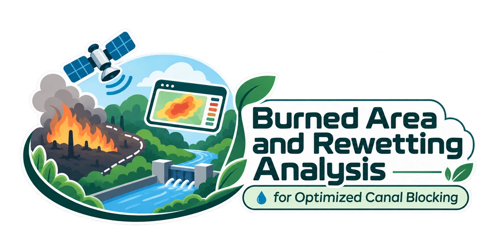

Peatland
Study area
Add 2+ points
1 km
–Choose a tool
© Copernicus / EOX · © OpenStreetMap
+
CanalRiverStructurePeatBlockFire
PLAY WITH FIRE
Hour 0Ready
Start48 h

Fire: place ignition. Canal: draw a line. Block: select a canal. Erase: remove edits.